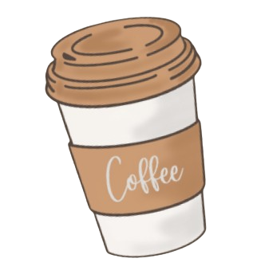

— North End Cafe, where your coffee actually tastes like coffee —
We don't do sad lattes or dusty croissants. Every cup is brewed with enough love to fix a Monday, and every bite is fresh enough to make you question why you ever ate anywhere else. Come in grumpy. Leave insufferably cheerful. You've been warned.
View Our Menu
We're not a chain. We're not trying to be. North End Cafe was born in 2010 when our founder got tired of overpriced coffee that tasted like sadness in a paper cup. So she bought a grinder, found a baker who actually cares, and opened this little gem. Since then, we've survived rain, lockdowns, and one very dramatic seagull incident. We're still here. So is the coffee. Come find us.